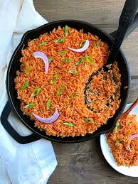
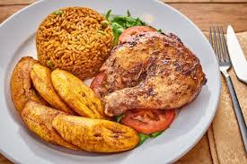

Although considerable variation exists, the basic profile for Nigerian jollof rice includes long-grain parboiled rice, tomatoes and tomato paste, pepper, vegetable oil, onions, and stock cubes. Most of the ingredients are cooked in one pot, of which a rich meat stock and a fried tomato and pepper puree characteristically forms the base. Rice is then added and left to cook in the liquid. The dish is then served with the protein of choice and very often with fried plantains, moi moi, steamed vegetables, coleslaw, salad, etc. In the riverine areas of Nigeria where seafood is the main source of protein, seafood often takes the place of chicken or meat as the protein of choice
Jollof rice traditionally consists of rice, cooking oil, and vegetables such as tomato, onion, red pepper, garlic, ginger and Scotch bonnet chili peppers. To enhance the colour of the dish, tomato paste (purée) is added. As seasoning, spices, salt, stock cubes (a blend of flavour enhancers, salt, nutmeg and herbs), curry powder and dried thyme are used. To complement the dish, chicken, turkey, beef or fish are often served with the dish including a very chilled youghurt will take you to cloud 9.
| ingredients | Measurement |
|---|---|
| Rice | 3 cups |
| cooking oil(groundnut oil) | 1 satchet |
| Tomatoes(Fresh or tomatopaste) | 1 satchet |
| Onion | 1 fat bulb |
| Red Pepper | 5 seeds |
| spices(thyme,curry,kitchen glory) | 1 satchet each |
| Big Fat Turkey | 1 |
And of course, salt to taste!
Even though my favourite food is a Jollof Rice, I enjoy other foods as well like Pizza and Pasta. However, I feel when it comes to eating daily, nothing beats homemade food. We cannot eat our favourite food daily as it will become boring.